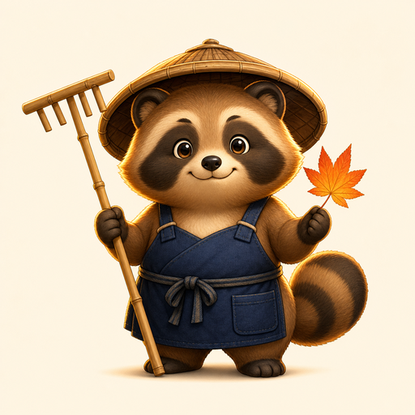

Day 021 · hybrid/aki/
Score0
Best0
Harmony◆◆◆
Turbulence0%
Combo×1.0
ToolRake ↗
Time0:00
First Rake Circle
Aki Karesansui Ripplekeeper
Rake calm sand paths, guide 3 red leaves into Moon Basin A, and keep moss untouched.
🍁 0/3 red leaves◯ Moon Basin Amoss untouched

Choose a rake direction, draw short strokes across sand, then release leaves when the preview looks calm.